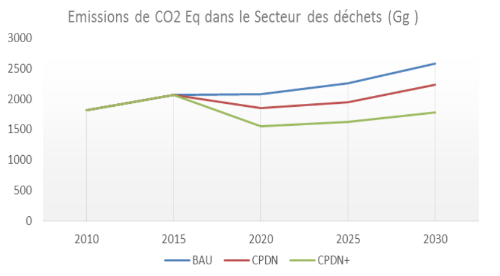

REPUBLIQUE DU SENEGAL
Un Peuple – Un But – Une Foi
MINISTERE DE L’ENVIRONNEMENT ET DU DEVELOPPEMENT DURABLE
CONTRIBUTION PREVUE DETERMINEE AU NIVEAU NATIONAL (CPDN) Septembre 2015
Résumé
La Contribution Prévue Déterminée au niveau National (CPDN) du Sénégal s’inscrit dans le cadre de sa stratégie de développement, le Plan Sénégal Émergent (PSE), ainsi que ses programmes sectoriels de gestion durable de ses ressources naturelles et environnementales. L’État du Sénégal met en œuvre plusieurs projets et programmes ayant pour objectif l’accélération de la croissance économique, la réduction de la pauvreté et l’amélioration de la qualité de vie des citoyens. Cette stratégie repose en grande partie sur l’exploitation de ses ressources naturelles et exige, afin de garantir une croissance durable et responsable, une bonne gestion de ces ressources.
Plusieurs études réalisées au Sénégal renseignent sur les conséquences du changement climatique. Les impacts observés montrent une évolution à la baisse de la pluviométrie, une hausse certaine des températures moyennes, une élévation du niveau de la mer et des perturbations sur la disponibilité de ressources hydrauliques et halieutiques, des sols et espaces cultivables. Elles traduisent une vulnérabilité des écosystèmes du Sénégal, nécessitant des actions précises d’atténuation et d’adaptation aux perspectives climatiques futures afin d’en maîtriser les impacts potentiels, notamment en termes socio-économiques sur les 60% de la population dont la subsistance dépend directement de ces ressources.
La CPDN du Sénégal a été élaborée par une équipe de consultants locaux sous l’encadrement de la Direction de l’Environnement et des Etablissements Classés (DEEC) et du Ministère de l’Environnement et du Développement Durable en collaboration avec le Comité National sur les Changements Climatiques (COMNACC), sur la base d’un processus participatif et inclusif. Une évaluation rigoureuse de la situation environnementale, la participation d’experts sectoriels, des collectivités locales, de la société civile et l’implication de l’État ont permis de produire un ensemble d’actions significatives qui manifestent l’engagement du Sénégal à contribuer au défi collectif que représente le changement climatique. Cette évaluation a permis d’identifier sur les volets d’atténuation et d’adaptation, les secteurs portant de façon prioritaire les activités de maîtrise des impacts du changement climatique comme étant : l’agriculture, la pêche, la foresterie, le transport, la gestion des déchets, l’énergie et l’industrie.
Un atelier national tenu le 14 septembre 2015, présidé par le Ministre de l’Environnement et du développement durable a permis de valider des engagements précis de réduction des émissions de Gaz à effet de serre (GES) pour le Sénégal à l’horizon 2035. La CPDN a été adoptée au conseil des ministres du 16 septembre 2015.
Malgré des capacités limitées et le faible niveau des émissions actuelles du Sénégal, cette contribution traduit la volonté de l’État à prendre part aux stratégies globales d’atténuation et d’adaptation aux changements climatiques. La mise en œuvre de la CPDN est estimée à un coût financier de 21,5 milliards de dollars US et nécessite d’importants moyens humains et technologiques, mais aussi l’appui de la communauté internationale afin de permettre des réductions encore plus significatives d’émissions de GES.
Des simulations ont permis d’évaluer les impacts et les retombées socio-économiques escomptées de ces mesures. Bien qu’intervenant directement sur les secteurs cités précédemment, ces mesures constituent un levier d’amélioration de la situation économique nationale de la santé publique, de la gestion des problèmes liés à l’urbanisation, entre autres problématiques jugées essentielles.
Sigles et acronymes
| AFAT |
Agriculture Foresterie et Autres Affectations des Terres |
| BAU |
Cours Normal des Affaires – Business As Usual |
| BRT |
Bus à Haut Niveau de Service – Bus Rapid Transit |
| CCNUCC |
Convention-Cadre des Nations Unies sur les Changements Climatiques |
| CET |
Centre d’Enfouissement Technique |
| CETUD |
Conseil Exécutif des Transports Urbains de Dakar |
| CIVD |
Centre Intégré de Valorisation des déchets |
| CN |
Communications Nationales |
| COMNACC |
Comité National sur les Changements Climatiques |
| CORDEX |
Expérimentation des méthodes dites de désagrégation – Coordinated Regional Climate Downscalling Experiment |
| CPDN |
Contribution Prévue Déterminée au niveau National |
| CRN |
Centre de regroupement |
| CRODT |
Centre de Recherche Océanographique Dakar Thiaroye |
| CSE |
Centre de Suivi Écologique |
| DGPRE |
Direction de la Gestion et de la Planification des Ressources en Eau |
| ECO2 |
Équivalent en dioxyde de carbone (Équivalent CO2) |
| GDT |
Gestion Durable des Terres |
| GES |
Gaz à Effet de Serre |
| Gg |
Giga Gramme |
| GIEC |
Groupe d’experts Intergouvernemental sur l’Évolution du Climat |
| IDH |
Indice de Développement Humain |
| IPCC |
Panel Intergouvernemental sur le Changement Climatique – Intergovernemental Panel on Climate Change |
| MRV |
Mesure Rapportage Vérification – Measure Reporting Verification |
| ONAS |
Office National de l’Assainissement |
| PANA |
Plan d’Action National d’Adaptation |
| PAP |
Plan d’Actions Prioritaires |
| PAPIL |
Programme d’Appui à la Petite Irrigation Locale |
| PEID |
Petits États Insulaires en Développement |
| PGIES |
Projet de Gestion Intégrée des Écosystèmes |
| PIB |
Produit Intérieur Brut |
| PIUP |
Procédés Industriels et Utilisation des Produits |
| PMA |
Pays les Moins Avancés |
| PNA |
Plan National d’Adaptation |
| PNGD |
Programme National de Gestion des Déchets |
| PRACAS |
Programme de Relance et d’Accélération de la Cadence de l’Agriculture Sénégalaise |
| PSE |
Plan Sénégal Émergent |
| RCP |
Trajectoires Représentatives de Concentration – Representative Concentration Pathways |
| RNA |
Régénération Naturelle Assistée |
| SRI |
Système de Riziculture Intensif |
| CO2 |
Dioxyde de Carbone ou gaz carbonique |
| CH4 |
Méthane |
| N2O |
Protoxyde d’azote ou oxyde nitreux |
| MW |
Mégawatt |
| MWc |
Mégawatt-crête |
 |
| DONNEES ADMINISTRATIVES |
DONNEES SOCIO-DEMOGRAPHIQUES |
Nom officiel : République du Sénégal
Superficie : 196 722 km²
Capitale : Dakar
Villes principales : Kaolack, Saint-Louis, Thiès,Touba, Ziguinchor
Langues officielles : Français
Langues courantes : Wolof, Diola, Puular, Sérère et Soninké |
Population : 13 508 715 habitants
Personnes âgées de moins de 25 ans : 62%
Personnes âgées de plus de 60 ans : 5,2 %
Taux d’accroissement de la population : 2,5%
Densité : 69 habitants au km²
Taux d’urbanisation: 44 %
Taux de prévalence pauvreté : 46,7% (2011)
IDH : 163e sur 187 pays (PNUD, 2013) |
| DONNEES ENVIRONNEMENTALES |
DONNEES ECONOMIQUES |
Longueur côte océanique : 700 Km
Type de climat : sahélien
Réseau hydrographique : fleuve Sénégal (1 770 km), fleuve Gambie (1 150 km), lac de Guiers (600 millions de M3)
Émission Gaz à Effet de Serre: 7 525 Gg ECO2 (2000), 13 076 Gg ECO2 (2005) |
Monnaie : Franc CFA
PNB : 27,72 milliards USD (2013)
Taux de croissance du PIB en 2015 : 4,6%
PIB par habitants : 2 100 USD |
|
SECTEURS CLES
|
| AGRICULTURE |
ELEVAGE |
- Contribution au PIB en 2012: 7,2 %
- Source de revenus de 60% de la population du Sénégal
- Vision: atteindre l'autosuffisance en riz en 2017
|
- Contribution au PIB en 2012: 4.2%
- Taille du cheptel: 15 millions de têtes
|
| PECHE |
FORESTERIE |
- Contribution au PIB en 2012 : 2,2%
- Part de la pêche artisanale : 95%
- Nombre d’emplois créés : 600 000
|
- Contribue à la satisfaction des besoins en combustibles domestiques, alimentation, santé, habitat
- Déforestation annuelle nette : 40 000 ha par an
|
Introduction
L’État du Sénégal a défini un cadre de référence pour sa politique économique et sociale à travers le Plan Sénégal Émergent (PSE). Ce plan définit une vision ambitieuse du bien-être économique à l’horizon 2035, déclinée en une stratégie décennale et un premier plan d’actions prioritaires sur cinq ans (PAP 2014-2018) et détaillée sur trois axes : (1) la transformation structurelle de l’économie et la Croissance ; (2) le capital humain, la protection sociale et le développement durable ; (3) la gouvernance, les institutions, la paix et la sécurité.
Le PSE établit les bases d’une accélération de la croissance économique assise en grande partie sur l’intensification de l’activité dans les secteurs primaire et secondaire. Or, la combinaison, d’une part, des conséquences délétères du changement climatique sur les terres arables, ressources hydrauliques et halieutiques et d’autre part, de la forte croissance démographique du pays, sont susceptibles de compromettre le succès de ce plan national.
Compte tenu de la forte sujétion du pays au changement climatique et conformément à sa tradition de coopération internationale, le Gouvernement du Sénégal entend contribuer à l’effort collectif au travers de la mise en œuvre de mesures d’atténuation de ses émissions de GES et de mesures d’adaptation dans ses secteurs d’activités.
La CPDN du Sénégal s’inscrit donc dans le cadre du PSE, en écho avec ses Plans d’Actions Prioritaires.
1. Contexte
Les mesures proposées par le Sénégal s’appuient sur un diagnostic approfondi de la situation environnementale s’étant attaché à étudier :
- L’évolution des tendances climatiques de 1961 à 2010 et les perspectives climatiques ; et
- L’impact des changements notés sur différents secteurs d’activités économiques tout en soulignant les vulnérabilités de certains systèmes naturels et économiques par rapport à ces tendances.
1.1. Évolution des tendances climatiques et perspectives
Il existe un consensus sur les tendances des indicateurs climatiques structurants des écosystèmes sénégalais : les modifications constatées des températures, de la pluviométrie et des caractéristiques des surfaces de la mer sont appelées à continuer.
- Températures : de façon générale il est observé une forte augmentation des températures minimales alors que les températures maximales ont subi une légère augmentation. Les prévisions indiquent une variation moyenne de +1,1 à 1,8 degré Celsius à l’horizon 2035.
- Pluviométrie : l’analyse de l’évolution moyenne montre une diminution des précipitations de 1951 à 2000 sur les zones de référence. Les tendances futures prévoient la continuation de cette tendance à l’horizon 2035 et des épisodes extrêmes qui varieront entre -30% et +30%.
- Surface de la mer : il est observé une augmentation de la température des eaux d'environ 0,04 °C à 0,05 °C par an de 1980 à 2009 et une augmentation progressive de la salinité des eaux marines de la côte sénégalaise. Entre 1943 et 1965, les données du marégraphe de Dakar indiquent une augmentation moyenne du niveau de la mer de 1,4 mm par an. D'après les dernières évaluations, le niveau actuel devrait continuer à augmenter.
1.2. Impacts des changements climatiques et vulnérabilités des systèmes
Le diagnostic des effets du changement climatique met en exergue les impacts sur les systèmes biophysiques et socio-économiques.
1.2.1 Impacts et vulnérabilités des systèmes biophysiques
Les impacts constatés et prévus du changement climatique affectent les systèmes biophysiques clés du Sénégal :
- Les réserves hydrauliques. La baisse des précipitations et l’augmentation de l’évapotranspiration ont entrainé une baisse de plus de 50% du débit des fleuves Sénégal et Gambie, une remontée des eaux marines sur la Casamance, le Sine et le Saloum, un assèchement du Ferlo et des vallées associées, une baisse générale du niveau des nappes, l’assèchement des rivières continentales et autres plaines d’inondation et la salinisation des eaux douces et des terres de culture dans les biefs maritimes.
- La biodiversité et les écosystèmes. Selon le Groupe d’experts Intergouvernemental sur l’Évolution du Climat (GIEC), les changements climatiques entraîneront des perturbations physiologiques chez certaines espèces, mais aussi des modifications dans le fonctionnement des écosystèmes. Certains écosystèmes du territoire national sont particulièrement vulnérables notamment les forêts de mangroves, la zone des Niayes, certaines zones humides côtières.
- Les sols et les terres agricoles. Du fait de la baisse de la pluviométrie et de l’augmentation de la température attendues, on assiste à une réduction du couvert végétal, une érosion hydrique et éolienne, une dégradation des sols dénudés et une salinisation des terres. Cette situation est plus marquée dans des régions comme Fatick, Kaolack, Ziguinchor et dans la zone des Niayes où les déficits pluviométriques seront les plus accentués.
- Les océans et les mers. On constate un réchauffement de la température de l’océan, des modifications de l’hydrodynamisme et des mécanismes d’enrichissement trophiques (upwelling et apports des estuaires et fleuves) ainsi qu’une érosion côtière rapide, conséquence directe de l’élévation du niveau de la mer.
1.2.2. Impacts et vulnérabilités des systèmes socio-économiques
Le changement climatique affecte également des secteurs économiques clés sénégalais, notamment en matière d’emploi. Parmi ceux-ci, quatre sont notés :
- Le tourisme. La Petite Côte, le littoral casamançais et les îles du littoral, principales zones touristiques du Sénégal, sont très vulnérables face à l’érosion côtière. Le tourisme balnéaire représente plus de 50% de l’offre touristique nationale. Ce secteur est particulièrement dépendant de la qualité du littoral. Les zones balnéaires de Saly et de Djifère ainsi que la zone culturelle de Saint-Louis sont les plus touchées par le phénomène de l’érosion. Pour la zone spécifique de Saly, qui dispose d’une capacité annuelle de plus de 8 000 lits, 30% des infrastructures ont perdu leurs plages qui représentaient le principal attrait touristique de la zone.
- L’agriculture. La contribution du secteur au PIB est passée d’une moyenne de 10% entre 1997 et 2001, à un peu plus de 7% entre 2007 et 2011. L’effet conjugué de la diminution de la pluviométrie et de l’augmentation de la température affectent négativement les rendements agricoles et la productivité du secteur de l’élevage. La réduction attendue de la surface des terres agricoles aura pour conséquence la baisse de 30% de la production céréalière à l’horizon 2025. Des impacts sont également attendus sur le secteur de l’élevage. Ces effets combinés favorisent des conflits entre éleveurs et agriculteurs pour l’accès aux ressources.
- La pêche. Les perturbations marines impactent les ressources halieutiques et la résilience des communautés de pêcheurs. On observe une migration et une diminution des stocks de certaines espèces qui jouent un rôle prépondérant dans l’alimentation, les économies locales et l’exportation. Une étude de COMFISH/USAID fait par exemple état de la diminution du stock de sardinelles au Sénégal. Ceci fragilise les communautés de pêcheurs et détériore la sécurité alimentaire.
- L'habitat et la santé. De 1980 à 2009, les inondations ont affecté plus de 900 000 personnes, causé 45 décès et entrainé des dégâts matériels estimés à plus de 142 millions de dollars US (71 milliards de FCFA). Les inondations récurrentes grèvent lourdement le budget national et favorisent l’émergence de nombreuses maladies liées à l’eau.
Ces constats justifient la nécessité d’élaborer une contribution du Sénégal en matière d’atténuation et d’adaptation face aux changements climatiques. Elle focalise les efforts sur la protection des écosystèmes physiques et biologiques dans les secteurs clés que sont: l’agriculture, la foresterie, l’élevage, la pêche, l’industrie et l’énergie, la santé ainsi que la gestion des chocs climatiques récurrents.
1.3. Équité et ambition
Le Sénégal est un Pays Moins Avancé (PMA) et doit encore faire face à de nombreux défis sur le plan socioéconomique. Les activités proposées dans le cadre de la CPDN sont mises en œuvre aussi bien sur la base des ressources nationales qu’avec le soutien de la communauté internationale. Ces activités sont équitables par rapport aux capacités nationales et à la vulnérabilité du pays.
La CPDN est ambitieuse en ce qu’elle va au-delà de la proposition de stratégies et de programmes accordés aux PMA et aux PIED.
2. Mesures d’atténuation
La CPDN du Sénégal, sur le volet atténuation, vise la mise en œuvre d’activités spécifiques ayant un impact sur la réduction des émissions des GES, aussi bien sur la base des ressources nationales (objectifs de la contribution inconditionnelle) qu’avec le soutien de la communauté internationale (objectifs contribution conditionnelle) en rapport à ses capacités. Ces activités couvrent trois gaz : le dioxyde de carbone (CO2), le méthane (CH4) et les oxydes nitreux (N2O).
2.1 Activités sectorielles
Les activités qui génèrent des réductions d’émissions de GES seront réalisées dans les sous-secteurs suivants : (1) l’énergie, à travers la production de l’électricité, l’efficacité énergétique et le transport, (2) l’Agriculture Foresterie et Autres Affectation des Terres (AFAT) à travers la gestion des fumiers, la riziculture, les sols agricoles, les engrais organiques, les terres forestières et les plantations,(3) l’industrie et (4) la gestion des déchets par le biais des traitements des déchets solides, des eaux usées industri elles, domestiques et commerciales.
| Secteur Énergie |

|
| Année de Référence : 2010 |
| Méthodologie : IPCC 2006 |
| Gaz concerné : CO2 |
| Objectif sous-secteur électricité et combustible domestique |
Options inconditionnelles |
Options conditionnelles |
| Renforcement de la distribution en électricité et en combustible domestique |
Programme EnR (energie Renouvelabe) 1
- Solaire PV : centrales d’une puissance cumulée totale de 160 MWc
- Éolienne : centrales d’une puissance cumulée totale 150 MW
- Hydraulique : centrales d’une puissance cumulée totale de 144 MW / 522 GWh
- Électrification Rurale (PNUER)
- 392 villages électrifiés en mini- réseau électrifiés solaire ou hybride (diesel / solaire)
- Combustibles domestiques -construire et diffuser
- Installation de 27 500 bio digesteurs domestiques
- Production et diffusion de 4,6 millions de Foyers Améliorés pour bois de feu ;
- Production et diffusion de 3,8 millions de foyers améliorés de charbon de bois.
|
- Programme EnR2 (2020 à 2025) – éoliennes mise en service de centrales d’une puissance totale cumulée de 200 MW
- Solaire PV : mise en service de centrales d’une puissance totale cumulée de 200 MWc
- Biomasse : mise en service de centrales d’une puissance totale cumulée de 50 MW
- Solaire – CSP : mise en service de centrales d’une puissance totale cumulée de 50 MW
- Hydraulique : Injection sur le réseau de 200 GWh supplémentaires en 2025
- Remplacement de la centrale à charbon Jindal 320MW Charbon par deux centrales à Cycles Combinés au Gaz Naturel Liquéfié (CCGN) de 400 MW (2025 : 200 MW et 2028 : 200 MW)
- 5000 villages électrifiés par voie solaire (mini-réseau) pour l’accès universel à l’électricité
- Combustibles domestiques - construire et diffuser
- 7,6 millions de foyers améliorés de bois de feu
- 6,8 millions de foyers améliorés de charbon de bois
- 49 000 bio digesteurs domestiques
|
| Objectif sous-secteur efficacité énergétique |
Options inconditionnelles |
Options conditionnelles |
| Amélioration de l’efficacité énergétique |
- Production de matériaux d’isolation thermique à base de typha au Sénégal et adoption de la technique de Voûte Nubienne dans l'habitat rural et les infrastructures communautaires
- Phase pilote de promotion des équipements de froid alimentaire
- Audits obligatoires pour les grandes entreprises
- Études d'approvisionnement en énergie pour les nouvelles installations (75 études/an)
- Programme pilote mise à niveau environnementale
- Valorisation des déchets dans l'Agro-industrie (biogaz)
|
- Éclairage efficace (Diffuser 3 millions de lampes à LED)
- Programme d'efficacité énergétique dans les bâtiments tertiaires et dans l’administration
- Promotion des équipements de froid alimentaire performants : remplacement de 95% du parc d’équipements
- Efficacité énergétique de l'éclairage public (remplacement de 75 000 lampadaires)
- Mise à niveau environnementale des entreprises (50 entreprises par an, avec des incitations financières)
- Valorisation des déchets dans l'agro- industrie : 4 millions de GJ de biomasse agricole à travers des systèmes de Co/tri-génération (115 MW)
- Efficacité énergétique des cimenteries
- Gaz naturel : substituer 40% du charbon dédié à l'autoproduction d'électricité par du gaz naturel
|
| Objectif sous-secteur transport |
Options inconditionnelles |
Options conditionnelles |
| Renforcement Transport en commun |
- Bus Rapide Transit (BRT) pilote (Ligne Rouge : Dakar/ Guédiawaye)
|
- Option 1 : Autre BRT (Ligne Verte)
|
| Niveau de Réduction des émissions par rapport au BAU |
Années
|
Années
|
| Coûts globaux |
1,361,174,866 USD |
1,708,057,959 USD |
| Secteur Industrie |

|
| Année de référence : 2010 |
| Méthodologie : IPCC 2006 |
| Gaz concerné : CO2 |
| Objectifs |
Options conditionnelles |
Amélioration des procédés
industriels |
- Substitution du CO2 au Clinker dans la fabrication du ciment
|
| Niveau de réduction des émissions par rapport au BAU |
- Réduction de 10% en 2025 et 10% en 2030
|
| Coûts |
109,000,000 USD |
Note: L’élimination de 35% de la consommation de HCFC-22 vers 2020 aura un impact significatif sur les réductions des émissions de GES dans le secteur de l’industrie.
| Secteur Déchets |
 |
| Année de référence : 2010 |
| Méthodologie : IPCC 2006 |
| Gaz concernés : CO2, CH4, N2O |
| Objectifs |
Options inconditionnelles |
Options conditionnelles |
| Assainissement et valorisation des déchets |
- Construction de 3 Centres intégrés de valorisation des déchets (CIVD) dans les communes de Tivaoune, Touba et Kaolack
- Renforcement de la capacité d’épuration de la STEP de Camberène, Rufisque et installation de nouvelles STEP dans les villes de Ziguinchor, Fatick, Kaolack, Kolda, Matam, Joal, Nioro et Bakel
|
- Réhabilitation de 357 décharges sauvages répertoriées
- Valorisation matière organique (compostage) et énergétique (méthanisation)
- Construction d’infrastructures de gestion durable des déchets
- 100 Points de Regroupement Normalisés (PRN)
- 17 Centres Intégrés de Valorisation des déchets (CIVD)
- Récupération énergétique du méthane
|
| Niveau de réduction des émissions par rapport au BAU |
- Réduction de 11% en 2020, 14% en 2025 et 13% en 2030
|
- Réduction de 26% en 2020, 28% en 2025 et 31% en 2030
|
| Coûts |
6,900,000 USD |
1,370,000,000 USD |
| Secteur Agriculture |

|
| Année de Référence : 2010 |
| Méthodologie: IPCC 2006 |
| Gaz concerné : CO2, CH4 et N2O. |
| Objectifs |
Options inconditionnelles |
Options conditionnelles |
| |
Programme de Relance et d’Accélération de la Cadence de l’Agriculture Sénégalaise (PRACAS) |
- Système de Riziculture Intensif (SRI) : Économie de près de 40 % en eau par rapport à la riziculture traditionnelle inondée
|
- Gestion Durable des Terres
- Application des bonnes pratiques d’Agroforesterie, de Régénération Naturelle Assistée (RNA) et d’utilisation de la fumure organique sur la moitié des superficies emblavées à l’horizon 2035
|
| Mise en œuvre des projets et programmes |
Programme de Relance et d’Accélération de la Cadence de l’Agriculture Sénégalaise PRACAS
- Projets et Programmes du PSE (PRACAS)
|
- Agroforesterie
- Combinaison d’arbres, cultures classiques et/ou d’animaux sous forme d’arrangement
- Récupération des effluents des
biodigesteurs installés spatial ou temporel
|
| Niveau de réduction des émissions par rapport au BAU |
- Réduction de 0,08%, 0,14% et 0,19% respectivement en 2020, 2025 et 2030
|
- Réduction de 0,35%, 0,51% et 0,63%
respectivement en 2020, 2025 et 2030
|
| Coûts |
396,105,823 USD |
1,796,052,928 USD |
| Secteur Foresterie |

|
| Année de référence : 2010 |
| Méthodologie : IPCC 2006 |
| Gaz concerné : CO2 |
| Objectifs |
Options inconditionnelles |
Options conditionnelles |
| Réduction des émissions liées à la consommation de bois de chauffe et de charbon |
- Aménagement et gestion participative des forêts (plus de 30 forêts avec PROGEDE)
- Effort de domiciliation de l’exploitation du bois et du charbon dans les forêts aménagées
|
- Mise en défens des forêts non encore aménagées
- Aménagement de 20 forêts par an pendant 5 ans (Aménagement in fine de 1 million ha de forêts)
- Substitution des meules traditionnelles par la meule casamançaise
- · Diversification des combustibles domestiques
|
Réduction des Émissions liées à la déforestation et la dégradation des forêts
|
- Renforcement de la surveillance et de la gestion participative des forets par une augmentation des effectifs des agents du service des Eaux et Forêts (effectif x 2)
- Reboisements, Grande muraille verte (GMV), des éco-villages, reboisements annuels et restauration des mangroves par l’Etat et d’autres acteurs, etc.
|
- Réduction du taux de déforestation (qui est de - 40 000 ha) de 25% à partir de 2023
- Aménagement de 20 forêts par an pendant 5 ans dont 60% de forêts classées et 40% de forêts communales
- Mise en défens/RNA, reboisement par enrichissement des forêts
- 4000 ha/an de mangroves mis en défens et reboisés à partir de 2017
|
|
Réduction des émissions liées aux feux de brousse et de pâturages
BAU : 907.656,2 ha brûlés en moyenne de 2006 à 2010
|
- Réduction annuelle des superficies brûlées de l’ordre de 5% à partir de 2020
|
- Réduction de 30% des superficies brulées dès 2020 et 90% à partir de 2025
|
|
Séquestrations dues au reboisement des forêts classées
BAU : 22 392 ha/an de 2011 à 2035
|
22 392 hectares reboisées par annuellement depuis 2011 |
200 000 à 204 000 ha reboisées annuellement à partir de 2017 |
|
Coûts
|
655 000 USD |
76 800 000 USD |
2.2 Impacts sur les émissions globales
Sous l’option inconditionnelle (CPDN), les réductions d’émissions par rapport à leur trajectoire prévue sont de de 3%, 4% et 5% respectivement en 2020, 2025 et 2030. Avec l’option conditionnelle (CPDN+), les réductions d’émissions attendues sont de l’ordre de 7%, 15% et 21% sur les mêmes années.
Tableau 1: Objectifs d’atténuation des contributions inconditionnelle et conditionnelle
| Secteurs |
2020 |
2025 |
2030 |
2020 |
2025 |
2030 |
| Énergie |
4% |
7% |
6% |
10% |
23% |
31% |
| PIUP |
0% |
0% |
0% |
0% |
10% |
10% |
| Agriculture |
0.08% |
0.14% |
0.19% |
0.35% |
0.51% |
0.63% |
| Déchets |
11% |
14% |
13% |
26% |
28% |
31% |
Figure 1 : Trajectoire globale des émissions

2.3 Mise en œuvre des options d’atténuation
2.3.1. Besoins financiers
Les besoins en financement de la contribution inconditionnelle s’élèvent à plus de 1,8 Milliards de dollars US. Les besoins en financement de la contribution conditionnelle s’élèvent à 5 Milliards dollars US. Le financement de la contribution conditionnelle est attendu dans le cadre des mécanismes financiers qui accompagneront l’Accord.
2.3.2 Besoins technologiques
Pour l’agriculture et la foresterie, il s’agira de renouveler les équipements et de renforcer les capacités techniques en cartographie et systèmes d’informations géographiques, et utilisation du GPS.
Pour l’énergie, un besoin d’assistance technique pour combler les lacunes et expertises pour le développement a été identifié pour accompagner l’implantation, l’exploitation et la maintenance durable des technologies suivantes :
- Centrales à Cycles Combinés au Gaz Naturel ;
- CSP (TES + Dessalement + GN) ;
- Éoliennes à aimant permanant et entrainement direct ;
- Logistique du Gaz Naturel et infrastructures requises ;
- système de co/tri-génération
- Système de surveillance, de mesure et de suivi.
Ces partenariats permettront d’évaluer les besoins en formation afin d’élaborer des programmes de formation de niveaux technicien, ingénieur, maitrise /doctorat.
2.4 Utilisation des mécanismes de marché
Concernant l’utilisation des mécanismes de marché, l’Etat du Sénégal n'a pas l'intention de réaliser sa contribution en achetant des unités de réduction d’émissions issues de tout mécanisme de marché existant ou à venir. Néanmoins, le Sénégal sera un pays d'accueil de projets de tout mécanisme international sur le climat visant à assurer la protection de la planète par le respect des normes qui offrent des résultats réels, permanents, supplémentaires et vérifiés tout en évitant le double comptage des émissions et répondant à ses objectifs de développement durable.
En outre, le Sénégal soutient la poursuite du Mécanisme de Développement Propre (MDP) établi en vertu du Protocole de Kyoto et sa poursuite sous une forme à définir dans le cadre du nouvel Accord.
Les éléments de la CPDN qui sont conditionnels, avec l'aide internationale, pourraient inclure des projets qui sont inscrits dans le cadre de mécanismes non liés au marché établi en vertu de la Convention.
2.5 Retombées socio-économiques des mesures prévues
Le changement climatique exacerbe la dégradation du capital environnemental du Sénégal. En retour, tous les secteurs clés de l’économie subissent directement ou indirectement le phénomène dont les conséquences compromettent la bonne marche de l’économie. D’importants bénéfices socio-économiques sont attendus des mesures préconisées.
2.5.1 Production d’électricité, biomasse et déchets
Les mesures destinées à réduire les émissions de CO2 dans les domaines de la production d’électricité, de la biomasse et des déchets sont susceptibles d’apporter les retombées suivantes :
- Contribution significative à l’indépendance énergétique du pays ;
- Diminution des déficits d’approvisionnement et de vulnérabilité aux fluctuations des prix internationaux des hydrocarbures ;
- Amélioration de la balance des paiements, voire un allègement du budget de l’État consacré aux subventions pour l’énergie ;
- Création d’emplois estimée à environ 40 000 emplois nets, directement et indirectement ;
- Contribution au développement local: le développement en milieu rural du biogaz et du bio-charbon est créateur de micro et petites entreprises et d’emplois ;
- Diminution de la pollution atmosphérique locale et par conséquent de la baisse des effets néfastes sur la santé des populations ;
- Utilisation des formes d’énergies modernes dans les foyers allégeant ainsi la charge de travail des femmes et contribuant à l’amélioration des performances scolaires des enfants.
2.5.2 Efficacité énergétique, transport et industrie
Dans les domaines de l’efficacité énergétique dans le bâtiment, du transport et de l’industrie, l es mesures destinées à réduire les émissions de CO2 apporteraient les retombées suivantes :
- Allégement significatif des factures énergétiques pesant lourdement sur les entreprises et les ménages;
- Adoption de réglementations imposant aux entreprises des audits énergétiques et des études d’approvisionnement en énergie et permettant d’améliorer leur performance énergétique de 5% à 15% et leur marge de productivité et de compétitivité.
3. Mesures d’adaptation
L’ensemble des secteurs ciblés pour la relance de l’économie nationale sénégalaise, tels que l’agriculture, l’élevage, la pêche, le tourisme, les questions de santé et de nutrition, l’accès à l’eau, qui constituent la trame de fond du PSE, demeurent vulnérables aux impacts du changement climatique.
Des options structurantes telles que les ouvrages de protection côtière, les bassins de rétention, les retenues collinaires, les technologies de lutte contre la dégradation des terres, les réseaux d’adduction d’eau potable ont été mises en œuvre pour atténuer leur vulnérabilité et réduire les retombées négatives sur les populations. Cependant, au regard des projections climatiques futures et de l’état des lieux des systèmes biophysiques, environnementaux et socio-économiques, il est nécessaire de procéder à une mise à l’échelle de ces pratiques appropriées.
À cet effet, la composante adaptation au changement climatique, au-delà de l’élaboration de la CPDN, constitue une préoccupation nationale. Le Sénégal a pour ambition d’intégrer l’adaptation au changement climatique dans la formulation et la programmation des politiques de développement à l’instar d’autres priorités telles que la lutte contre la pauvreté, la santé et les Programmes Nationaux de Lutte contre le VIH sida, le paludisme, la tuberculose, etc., pour assurer une trajectoire maitrisée des objectifs de la croissance.
3.1 Objectifs de l’adaptation
Les options énumérées dans le tableau ci-dessous représentent les objectifs sectoriels du Sénégal aux horizons 2016-2035, en matière d’adaptation.
Tableau 2 : Options adaptation aux horizons 2016-2035
| Biodiversité |
- Miseen œuvre des instruments tels que : la Stratégie et le Plan National d’Action sur la Biodiversité(SPNAB), la Politique Nationalede Gestion des Zones Humides (PNZH), le projet de loi-cadresur la biodiversitéet les aires protégées ;
- Renforcement de la résiliencedes écosystèmes;
|
| Zones côtières |
- Miseen place et soutien d’un observatoiredu littoral ;
- Protection des zones vulnérables et /ou déplacement des populations vulnérables;
- Études scientifiques et techniques sur la restauration des écosystèmes côtiers menacés ;
|
| Ressources en Eau |
- Maitrisede la ressource;
- Gestion Intégrée des Ressources en Eau ;
|
| Pêche |
- Promotion de l’assurance-pêche;
- Prévention et gestion des risques et catastrophes ;
- Amélioration de l’efficacitéde la gestion et extension des aires marines protégées et des parcs marins ;
- Développement de l’aquaculturedurable et gestion durabledes ressources halieutiques ;
|
| Agriculture |
- Promotion des technologies de Gestion Durabledes Terres (GDT) ;
- Amélioration et adaptation des productions végétales et forestières ;
- Promotion de l’assuranceagricole ;
- Promotion de l’information climatique ;
- Miseà l’échellede la gestion concertée des ressources naturelles ;
|
| Élevage |
- Développement d’unités pastorales ;
- Promotion de l’assurancepastorale ;
- Amélioration génétique des espèces ;
- Amélioration et adaptation de la production et santé animale ;
|
| Inondation |
- Renforcement des infrastructures d’assainissements et des systèmes de drainagedes eaux pluviales dans les villes ;
- Planification des écosystèmes urbains intégrant les bassins versants ;
|
| Santé |
- Renforcement et miseen œuvre du système de surveillanceépidémiologique.
|
3.2 Coûts des options à l’horizon 2035
Le coût total des options d’adaptation au changement climatique à l’horizon 2035 s’élève à 14 558 millions de dollars US et se compose comme suit :
Tableau 3 : Coût du plan d'actions d’adaptation en millions de dollars US
| Biodiversité |
22.34 |
193.66 |
216 |
| Zones côtières |
400 |
6646 |
7046 |
| Ressources en Eau |
550 |
1654 |
2204 |
| Pêche |
40 |
280 |
320 |
| Agriculture |
400 |
1200 |
1600 |
| Élevage |
200 |
616 |
816 |
| Inondation |
160 |
1,976 |
2136 |
| Santé |
60 |
160 |
220 |
| Total |
1,832.34 |
12,725.66 |
14,558 |
3.3. Obstacles
Le caractère dynamique de la vulnérabilité, souvent influencé par plusieurs facteurs (environnementaux, socioéconomiques, politiques et institutionnels), rend complexe toute action d’adaptation au changement climatique. Les points ci-dessous constituent alors des enjeux majeurs que le Sénégal devra maîtriser :
- La planification de l’adaptation au niveau national. Les initiatives entreprises et mises en œuvre apportent des réponses à des situations d’urgence et nécessitent une planification à un niveau macro. L’élaboration, en cours, du Plan National d’Adaptation (PNA) permettra d’intégrer une approche de planification à long terme dans les futures initiatives du Sénégal.
- La bonne maitrise du cadre réglementaire et des moyens de mise en œuvre des engagements. La mise en place des procédures législatives simplifiées et des codes sectoriels (code de la pêche, code de l’environnement, code forestier, code de l’énergie) adaptés au contexte national va favoriser un plus grand engagement des décideurs publics et privés et faciliter l’exécution des engagements. La bonne exécution des engagements nécessitera également le renforcement des moyens techniques (données quantitatives et qualitatives), technologiques (matériels et équipements de travail) et humains dont dispose le Sénégal.
- La mise en place d’une approche multisectorielle. Le changement climatique impacte de façon transversale les secteurs clés de l’économie nationale. Une résilience efficace face à cette problématique nécessite l’adoption d’une approche multisectorielle permettant de renforcer la concertation entre les acteurs du domaine et faciliter la mise en place d’un cadre harmonisé des interventions futures.
- L’élaboration d’une stratégie de communication efficace. Il est essentiel que les acteurs politiques soient sensibilisés aux effets du changement climatique au même titre que les communautés les plus touchées par les inondations, l’érosion côtière, la réduction des terres arables. L’adoption d’une stratégie de communication orientée « citoyen » et « décideur » devient alors une nécessité afin de mieux impliquer toutes les parties prenantes dans le processus entamé par le Sénégal .
3.4 Facteurs clés de succès
Le Sénégal bénéficie de facteurs favorables à l’atteinte des objectifs fixés dans le cadre de l’atténuation et l’adaptation au changement climatique. Ces facteurs sont identifiés aux plans institutionnel, réglementaire, stratégique et national.
- Au plan institutionnel
- Le Sénégal a signé en juin 1992 et ratifié en juin 1994 la Convention Cadre des Nations Unies sur les Changements Climatiques (CCNUCC);
- Il dispose d’un Comité National sur les Changements Climatiques (COMNACC) qui constitue un cadre opérationnel d’information, de sensibilisation, de formation et d’appui aux différents projets et programmes sur les questions de changement climatique.
- Au plan réglementaire
- L’adaptation de la biodiversité aux changements climatiques a fait l’objet d’une intégration dans les différents codes sectoriels (codes forestier, de l’environnement, de la chasse et de la protection de la nature, de la pêche, minier, de l’eau, de l’urbanisme et de la construction);
- La loi du littoral prévoit également des dispositions réglementaires en matière d’adaptation aux changements climatiques.
- Aux niveaux stratégique et national, plusieurs initiatives ont également été mises en œuvre comprenant, entre autres, la Stratégie et le Plan National d’Action sur la Biodiversité (SPNAB), la Politique Nationale de Gestion des Zones Humides (PNZH), la Nouvelle Politique Forestière (20052025).
3.5 Retombées socio-économiques des mesures prévues
Des retombées importantes sont attendues des options d’adaptation à mettre en œuvre par le Sénégal à l’horizon 2035. Ces retombées touchent plusieurs aspects mais les bénéfices les plus significatifs sont attendus sur le plan socio-économique sur les secteurs ci-après :
Sols et Agriculture
- Réduction de l’incidence de la pauvreté ;
- Contribution à une meilleure sécurité alimentaire et nutritionnelle ;
- Renforcement de la résilience ;
- Création d’emplois ;
- Augmentation des rendements agricoles moyens à 3,2 tonnes en 2035 pour le scénario tendanciel BAU vs. 4,2 tonnes en 2035 pour le scénario de la politique volontariste en faveur des sols.
Pêche
- Création d’une valeur ajoutée 9.200 millions de dollars US dans le secteur à l’horizon 2035;
- Meilleure contribution économique et sociale du secteur à travers une gestion durable de la pêche (maîtrise des crises et du climat).
Zones côtières
- Réduction des risques socio-économiques impactant négativement les performances économiques du secteur touristique des zones les plus dégradées ;
- Lutte contre la diminution du rendement de la pêche et des coûts directs sur les infrastructures côtières.
Ressources en eau
- Limitation de l’exode rural et de ses effets néfastes ;
- Obtention d’une « eau productive » génératrice de valeur ajoutée dans les régions agricoles grâce aux ouvrages mis en place ;
- Création des opportunités d’emplois dans les zones concernées par les travaux d’ouvrage ;
- Rechargement des nappes phréatiques ;
- Contribution à la lutte contre les problèmes de salinisation ;
- Participation à la lutte contre les inondations ;
- 9,08 millions de dollars US de bénéfices de l’adaptation au risque de submersion mari ne à Saint-Louis;
- Réduction du coût actualisé net (CAN) liés à l’érosion côtière, estimé par la Banque Mondiale à 688 millions de dollars US.
Santé
- Réduction des coûts de détérioration de l’état de santé des populations estimés à 2.400 millions de dollars US à l’horizon 2080.
Inondation
- Les bénéfices socio-économiques attendus de la prévention des inondations correspondent aux pertes et dégâts évités ;
- Réduction du risque lié à la prolifération des maladies hydriques (diarrhée, dysenterie), du paludisme et des maladies cutanées ;
- Réduction du risque de déperdition scolaire due à l’occupation des écoles par les sinistrés ou à l’impossibilité de se rendre dans les salles de classe lors de la saison des pluies .
4. Suivi-Évaluation
Sous la supervision de la Direction de l’Environnement et des Établissements Classés du Ministère de l’Environnement et du Développement Durable, le suivi et l’évaluation des projets/programmes sera fait à travers :
- Le COMNACC qui sera la plateforme chargée de veiller au suivi de la mise en œuvre des activités prévues dans la présente contribution. Il assurera le suivi des différents indicateurs de la CPDN en relation avec les s départements sectoriels ;
- La mise en place d’un dispositif de suivi de la mise en œuvre du Plan National d’Adaptation (PNA) en cours d’élaboration qui va assurer la gestion de l’ensemble des projets et programmes identifiés comme options en atténuation et en adaptation;
- La mise en place d’un Observatoire du littoral pour les zones côtières ;
- L’adoption d’un système d’alerte précoce pour la prévention des risques et catastrophes ;
- La mise à contribution du Centre de Gestion de la Qualité de l’Air à Dakar (CGQA) pour le suivi des paramètres climatiques et atmosphériques définis dans la CPDN ;
- Les comités régionaux changements climatiques (COMRECC) incluant les collectivités locales à travers les structures décentralisées, les structures déconcentrées des départements sectoriels, les représentants du secteur privé, les ONG et les OCB.
Spécifiquement pour le volet atténuation, la contribution du Sénégal sera suivie, notifiée et vérifiée au travers des éléments contenus dans les communications nationales, les rapports biennaux actualisés et les dispositions relatives aux Mesures d’Atténuation Appropriées au niveau Nati onal (MAAN) qui sont en cours de développement.
5. Conclusion
La contribution énoncée par le Sénégal traduit la forte volonté du gouvernement à atténuer les émissions des
GES dans les secteurs tels que l’énergie et l’industrie qui, aujourd’hui, contribuent le plus aux émissions de CO2 enregistrées au niveau national. Elle énonce également plusieurs mesures d’adaptation spécifiques compte tenu de l’impact du changement climatique sur les axes clés de l’économie sénégalaise.
Cet effort sans précédent constitue une condition de réussite du Plan Sénégal Émergent (PSE) d’où la forte implication des décideurs politiques sénégalais sur la définition et le suivi de cette contribution.
Le succès dépendra aussi de l’ensemble des pays engagés dans la lutte contre le changement climatique à travailler dans une approche concertée et de mise en commun des moyens.